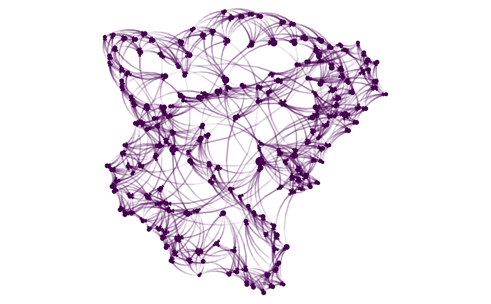

nplot using base graphics
nplot_base( x, layout = igraph::layout_nicely(x), vertex.size = igraph::degree(x, mode = "in"), bg.col = "transparent", vertex.nsides = 10, vertex.color = grDevices::hcl.colors(1), vertex.size.range = c(0.01, 0.03, 4), vertex.frame.color = grDevices::adjustcolor(vertex.color, red.f = 0.75, green.f = 0.75, blue.f = 0.75), vertex.rot = 0, vertex.frame.prop = 0.1, edge.width = NULL, edge.width.range = c(1, 2), edge.arrow.size = NULL, edge.color = NULL, edge.color.mix = 0.5, edge.color.alpha = c(0.1, 0.5), edge.curvature = pi/3, edge.line.lty = "solid", edge.line.breaks = 5, sample.edges = 1, skip.vertex = FALSE, skip.edges = FALSE, skip.arrows = skip.edges, add = FALSE, zero.margins = TRUE )
| x | A graph. It supports networks stored as |
|---|---|
| layout | Numeric two-column matrix with the graph layout in x/y positions of the vertices. |
| vertex.size | Numeric vector of length |
| bg.col | Color of the background. |
| vertex.nsides | Numeric vector of length |
| vertex.color | Vector of length |
| vertex.size.range | Numeric vector of length 3. Relative size for the
minimum and maximum of the plot, and curvature of the scale. The third number
is used as |
| vertex.frame.color | Vector of length |
| vertex.rot | Vector of length |
| vertex.frame.prop | Vector of length |
| edge.width | Vector of length |
| edge.width.range | Vector of length |
| edge.arrow.size | Vector of length |
| edge.color | A vector of length |
| edge.color.mix | Proportion of the mixing. |
| edge.color.alpha | Either a vector of length 1 or 2, or a matrix of
size |
| edge.curvature | Numeric vector of length |
| edge.line.lty | Vector of length |
| edge.line.breaks | Vector of length |
| sample.edges | Numeric scalar between 0 and 1. Proportion of edges to sample. |
| skip.vertex, skip.edges, skip.arrows | Logical scalar. When |
| add | Logical scalar. |
| zero.margins | Logical scalar. |
nplot_base returns a list with the following components:
vertex.coords A list of length N where each element describes the
geomtry of each vertex.
vertex.color A vector of colors
vertex.frame.coords Similar to vertex.coords, but for the frame.
vertex.frame.color Similar to vertex.color, but for the frame.
edge.color Vector of functions used to compute the edge colors.
edge.coords Similar to vertex.coords, the points that describe each
edge.
edge.arrow.coords A list of matrices describing the geometry of the
tip of the edges.
edge.width A numeric vector with edges' widths.
xlim, ylim Limits of the plot area.
# Same example as in nplot library(igraph) library(netplot) set.seed(1) x <- sample_smallworld(1, 200, 5, 0.03) nplot_base(x) # ala netplot (using base)